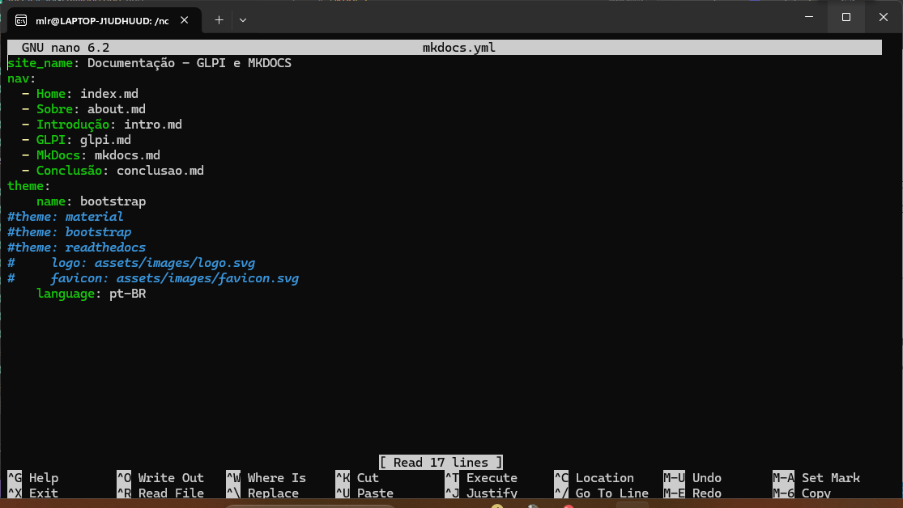

MkDocs
Esta página vem apresentar uma breve visão sobre a instalação, configuração e utilização do MkDocs tendo como base o sistema operacional Ubuntu 22.04 LTS via WSL.
Instalação
Para instalar o instalar MkDocs é necessário ter o Phyton e pip instalados, se você veio após a instalação do GLPI, basta verificar se o pip está instalado. Para instalar ambos podemos usar os comandos:
sudo apt-get install python3
sudo apt-get install python3-pip
Assim estamos prontos para instalar o MkDocs, vamos no terminal e digitamos o seguinte comando:
pip3 install mkdocs mkdocs-material mkdocs-bootstrap mkdocs-nature
Instalamos assim não só o MkDocs mas também os temas material, bootstrap e nature. Se você não os quiser basta omiti-los no comando.
Configuração e Utilização
Agora nosso programa está pronto para uso, podemos criar um novo projeto, por exemplo novosite, pelo seguinte comando:
mkdocs new novosite
Acessamos então a pasta pelo comando cd novosite que terá a seguinte estrutura:
| Pasta | Conteúdo |
|---|---|
novosite |
docs e mkdocs.yml |
docs |
index.md |
O arquivo mkdocs.yml contém a configuração para as páginas do projeto, como título, uma navbar, tema do site, icones, logo e etc. Acessando com o comando nano mkdocs.yml podemos alterá-lo. Veja abaixo um exemplo desse arquivo:

A pasta docs é onde ficam os arquivos .md que serão transformados em páginas HTML.
Podemos visualizar como as páginas ficarão digitando o comando mkdocs serve -a localhost:8000, onde em localhost:8000ficará hospedado o site para acessarmos.
Agora você tem toda liberdade para fazer suas paginas como quiser, como sugestão o site stackedit.io pode lhe ajudar a desenvolver.
Quando estiver satisfeito digite mkdocs build para compilar em um site completo e assim estará pronto para você hospedar em um servidor.